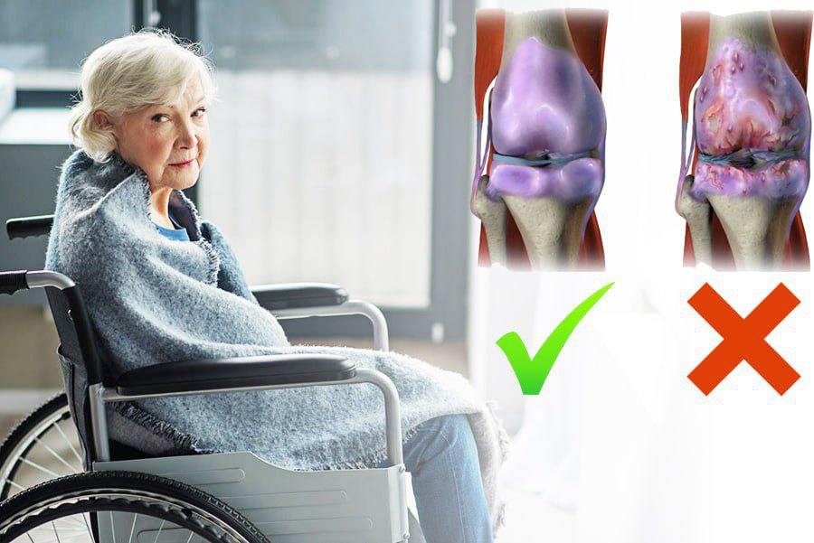

НОГИРОНЛАР АРАВАЧАСИГА ЎТИРМАСДАН ОЛДИН БЎҒИМЛАРИНГИЗНИ ДАВОЛАНГ!!!

Артрит, Артроз , Коксартроз , Остеохондроз каби касалликларда даво топинг!


Мушаклар ва бўғинлар учун Пееда Шамак ёғи Аюрведа билан мушаклар ва бўғимларни даволаш учун самарали воситадир. Мушаклар ва бўғинлар учун мой Пееда Шамак Оил бўғимларни тиклашнинг энг самарали усулларидан бири бўлади. Мушак ва қўшма ёғи Пееда Шамак Оил оғриқ ва ноқулайликни бартараф этишга ёрдам берадиган зарур табиий хусусиятларга эга. Пееда Шамак Оил мушак ва қўшма мой Аюрведа касаллиги билан курашишнинг ажойиб усули бўлади. 2017-йилда ,,О’збекистон интеллеcтуал мулк агентлиги’’ синовидан о’тган.


Муҳим! Тадқиқотлар давомида Декабр-Январ ойлари даволашни бошлаш учун энг яхши вақт, деб хулоса қилинди.
Бундай ҳароратда препарат самарадорлиги ортади. Бемор бу фаслда 47% тезроқ шифо топади. Бутун даволаш курси
давомида организм фаолияти 100% тикланади.
Ҳозир "SHAMAK OIL" препаратини ишлаб чиқарувчи сайтида буюртириш мумкин. У ерда исм ва телефон рақамини
қолдирсангиз, мутахассис буюртмани тасдиқлаш учун сиз билан боғланади.
Ҳозирча дорихоналарга жўнатиш учун етарли ҳажмда ишлаб чиқармаяпмиз, шундоғам ижтимоий тармокларда тез сотилиб
кетяпти. Аммо ишлаб чиқаришни кенгайтирсак, дорихоналарга чиқиши мумкин.
Препаратга бугун хорижда ҳам талаб катта. Чунки у ерда "SHAMAK OIL" каби самарали препаратлар йўқ. Аммо бизнинг
ҳажмларимиз ҳаммани таъминлашга етмайди, шу боис препарат фақат Ҳиндистон, Қозоғистон, МДҲ ва Европа Иттифоқи
мамлакатларида сотилмоқда.
Бўғим касаллиги ташхиси қўйилган одамларга мурожаат қилмоқчиман. Касалликка беписанд қараманг. Фақат ўз вақтида
даволаниш ҳаётингизни хавфдан халос этади.
Агар малакали доктор кўригига ёки қиммат муолажаларга пулингиз бўлмаса - шунчаки “SHAMAK OIL" бўғим оғриғи ва
емирилишни даволовчи воситасини қўлланг.
Шошилинг!
 Ҳавфсиз маҳсулот
Ҳавфсиз маҳсулот
 Қўшимча тўловларсиз
Қўшимча тўловларсиз
 Ўзбекистон бўйлаб бепул етказиб бериш ҳизмати
Ўзбекистон бўйлаб бепул етказиб бериш ҳизмати

Буюртма бердим, кутяпман.


Shamak oil воситаси шунчалик самаралими ҳали?
Мирзохид, буюртирсангиз, билиб оласиз)

Мен хам бувамларга SHAMAK OIL буюртирдим.

Касалликни эътиборсиз қолдирманг, бўғим оғриқлари хавфли, чунки агар у сурункали бўлса ва сиз уни даволамасангиз, у суяк емирилишина олиб келиб янада ҳалокатли касалликка айланиши мумкин. Менинг яқин қариндошим шу касалликдан НОГИРОНЛИК аравачасига ўтириб қолди, шунинг учун бўғим оғриғи билан боғлиқ муаммолар пайдо бўлиши биланоқ дарҳол шифокорга мурожат қилдим. Мен бир йил давомида мунтазам текширувларга бордим, лекин ҳеч нарса ўзгармади. Биз бу маҳсулотни учратмагунимизча... SHAMAK OIL таъсири шунчалик тез эдики, касаллик кундан-кунга камайиб борарди!

Умрим “хасса” тайоқда ўтган. Shamak oil ишлатувдим, бўғимдаги оғриқларидан асар ҳам қолмади. Энди ўзим бемалол юроламан!

Абдужаббор, гапингиз тўғри, бу зўр восита. сеяк емирилишдан ва оғриқлардан 100 фоиз халос қилади.

Shamak самарали бўлгани билан арзонгина ҳам экан. Мени огриклардан тезда халос қилди.

Эрим атиги 32 ёшда, тиззалари эса ҳудди мусиқали ва баланд тарзда қарсилламоқда. Хар сафар ҳозир у "оғрияпти!" деб бақириб йиқилиб қолади деб қўрқаман. Ажойиб мақолангиз учун раҳмат! Сиз мени энг яхшисига ишонтирасиз. Бувимдан ҳам эшитганман, чумоли ва ари заҳари тиззаси оғриганларни оёғига қўйишган экан. Мен Shamak oil зудлик билан буюртма бераман, акс ҳолда тўшакда нима ғижирлаётганини тушунмаяпман: кроватми ёки тиззаларимми?

Шифокор сифатида мен икки хил фикрдаман. Бир томондан, бундай касалликлар билан тиббий аралашув шунчаки зарур. Бошқа томондан, агар бу восита сизни чиндан ҳам оёққа турғазса, у ҳолда шифохона ҳақиқатан ҳам шифокорларнинг ёрдамига муҳтож бўлган одам учун жой бўшатади. Мен одамларни янада эҳтиёткор ва оқилона бўлишга чақираман. "Shamak oil"га келсак, нима учун ишлатиш керак эмас? Таркибда, албатта, ёмон ва кимёвий нарса йўқ ва санаб ўтилган компонентлар ҳақиқатан ҳам шифобахш хусусиятларга эга. Қўрқмасдан буюртма беринг.